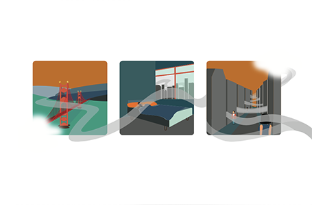

Seasonal Depression In San Francisco

Elise made three related icons to represent something prevalent in the lives of people who live in San Francisco, SAD. The seasonal affective disorder is roaming the city streets and not only affects students but also people in the workplace. Elise wanted to take the disorder and make it be seen through this project. Created in February 2022, she made the work with mid-century modern design in mind, which gives her creation this retro feeling. Components: Illustrator